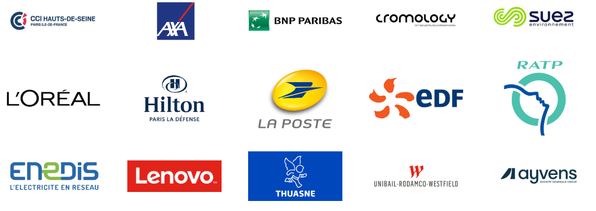

Nos partenaires
Merci à l’ensemble de nos partenaires pour leur engagement à nos côtés depuis la création de l’E2C 92.

Ils nous font confiance et s'engagent à nos côtés pour donner une chance aux jeunes des Hauts-de-Seine.
Merci à l’ensemble de nos partenaires pour leur engagement à nos côtés depuis la création de l’E2C 92.

Contactez directement notre responsable des relations entreprises et partenariats. Elle vous accompagnera dans la définition d’un partenariat adapté à votre entreprise.
Laure BETGE — Responsable relations entreprises et partenariats
Téléphone : 01 41 05 92 60
Email : info@e2c92.fr